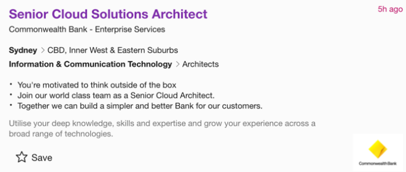
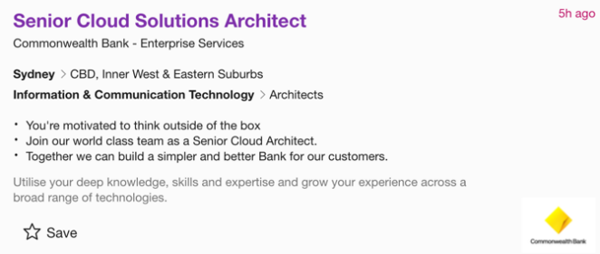
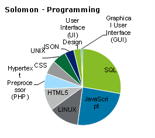

After discussing each other’s tests, they were summarised in the above table. The first thing that stands out from the summary, is that we each have a different Myers-Briggs profile. This means that each of us has unique styles, preferences, strengths, and weaknesses. We were able to find our places in the team quickly, and the more interaction we had, the easier it was to identify the strengths and weaknesses of each member. Overall, it is a benefit to have different personalities on the team, as it helps with the diversity of thinking and approaches.
On the learning test, the results were mostly visual or logical, with one pragmatist. This meant that for our team meetings, we could and did use visual aids such as screen sharing, diagrams, charts, and step-by-step instructions relating to group work. We also helped each other by working on sections through collaboration and reviewing each other's work. The Office 365/Teams collaboration capabilities were very useful in this regard, including the ability to record meetings. Due to different personal, work and university demands for each member, not all members were able to attend every meeting. Those that missed a meeting could easily watch the recording and the minutes of the meeting to catchup on the outstanding requirements and keep up with the group discussions.
Another useful part of Teams Meetings was that most members had their webcams on (unless at work or on the go). This helped us relate to each other better, and read each other’s body language and facial expressions, picking up the undertones and the point the member was making and how it was being received.
Each member’s final test was slightly different. Most of them did the Big 5 Personality Test, which ranks a person on their OCEAN traits. Another test was the Mind Tools Self-Test, which Jared used. This showed how he was creative, innovative, and sharing in his success, which was supported by the fact that most members of the group liked his project idea and picked it as the team’s idea to work on. The other test was the Leadership Style test, which Alex used. This showed how he was a transformative leader, who not only looks for improvements, but likes to take his team on the journey with him. This was reflected by Alex assuming the leadership, organisation, and co-ordination role within the team.
The ideal job for Aidan was a Digital Business Technical Analyst. This role is synonymous with many others, namely Solutions Architect, Business Systems Analyst, and Implementation Consultant. These alternative job titles allow for the ease of analysis and identification of position openings within the field of positions that have similar roles, skills, and responsibilities. The position is a middle position within an organisation, responsible for analysing gaps determined by senior management as part of strategic plans and creating solutions and specifications for digital solutions. The Solutions Architect is also responsible for sourcing or giving direction to developers to create and implement the digital solutions deemed necessary.
As an element of reviewing the IT position to determine relevance and feasibility, similar job postings and their required skill sets were identified.

 

The ideal job for Alex was initially an IT Entrepreneur, but to align with this assignment’s requirements, it was changed to Chief Information Officer (CIO). CIO is a senior management position requiring many years of experience in the industry and has lots of responsibility not only for business IT management, but also for the IT strategic outlook, and pairing it with the overall organisational strategy. This role forms part of an executive team in a company.
As part of the review, multiple CIO jobs were reviewed on SEEK (https://www.seek.com.au), to get an understanding of the requirements for this position and analyse the key skill sets needed to be both a successful job applicant, and successful at the job itself.

The ideal job for Eric was a Cyber Security Manager. For the position, you are required to have around 10 years' worth of work experience in a similar role. As a manager in this industry, you are responsible for testing security assessments and auditing, managing, and overseeing your team, and showing excellent communication skills to both internal staff and clients. You get to display your skills in various governance frameworks.
Several job postings were reviewed on SEEK (https://www.seek.com.au), to get an understanding of the requirements behind similar positions.


The ideal job for Jared was an AHS Product Engineer or similarly skilled Software Engineer. This role requires higher education in computer science, mining, electronics, or electrical engineering, and at least 5 years' worth of experience within the field, such as mining and mainframe experience. The responsibilities of this role are providing technical support, troubleshooting, and diagnosing the root causes of system issues, and providing expertise in application and software installations along with providing support and training for other employees. A high level of knowledge and expertise with common programming languages such as C-based languages (C, C++, C#), SQL and .NET are required, as well as any other role specific knowledge or certificates that the job requires, which for example could be a certificate in Cisco networking.
The requirements for this role will vary between employers and companies. Below are multiple examples of job positions that give an indication of what is required.


The ideal job for Marcus was a Penetration Tester/Ethical Hacker. To get into this field, you are required to have multiple certifications such as Offensive Security Certified Professional (OSCP). Some of the responsibilities that come with being an ethical hacker is being able to conduct a wide range of penetration tests and reporting those test results to your clients, such as project managers, service owners and developers. You must also maintain a high level of awareness for advancements in hardware and software technologies. Most of the time you will need to think like an attacker would and have a great understanding of vulnerabilities and penetration testing processes. You will also need experience with programming languages and multiple platforms. These are only some of the expected requirements, and they only scratch the surface of the skills required to be a professional ethical hacker.
Multiple job listings were reviewed on SEEK (https://www.seek.com.au). This was to get a better understanding on what employers are looking for when it comes to recruiting a penetration tester/ethical hacker.

The ideal job for Solomon was a Front-End Developer. As a front-end developer, you are responsible for developing the interfaces that users see and interact with. This role forms a crucial part of a development team, and requires experience with web technologies such as HTML, CSS, and JavaScript. A front-end developer will often work with back-end developers, who integrate the work of the front-end developer with the server-side applications of a company. They will also work closely with customers to deliver a technical solution.
Multiple job listings were reviewed on SEEK (https://www.seek.com.au). This was to better understand the requirements for this and similar positions.

On review of the jobs everyone chose there were two Developer jobs, Solomon’s was more specific to front-end, and Jared’s was more of a software engineer. There were two Cybersecurity jobs – Eric’s was more of a generalist cybersecurity position, while Marcus’ was more specific about Penetration testing. Aidan’s role was to be a Digital Business Analyst. Alex’s role was a CIO. When comparing the different roles, we identified some broad competencies that are required as part of any IT role (separate to the IT Industry analysis, which is further in the report).
We then summarised them into seven categories and ranked the requirement from 1 to 5 (1 least required to 5 highly required) for various roles. This was put in a table and radar charts, to try and see which best compares the roles. The table was useful when comparing the different competencies between different roles, making it easy to rank against each other. The radar charts show the unique fingerprint of each role.
Finally, we created a radar chart of all the roles to see what it would show combined. Overall, it showed with the roles selected there is already a good cross section and coverage of the different competencies withing the IT Industry.
The role of Digital Business Technical Analyst is a highly specific job title relating to the specific position being advertised by McDonalds. However, when reflecting upon the tasks required by the position, many other job titles with the same or similar day to day requirements were identified. Whilst the McDonald’s position did not appear in the Burning Glass data, similar positions made up 5.9% of total vacancies with the lowest rank of all relevant positions, Solutions Architect, being a rank of 1. In identifying the cause for such high demand, it is to be noted that the position is not a limited management position, but rather a more widely required analytical position that most of the business requires to determine IT needs and opportunities. The higher ranking over other positions such as developers is due to the solutions architect being able to create new solutions with already existing software at many organisations.
Using the specific position description for my ideal job, Digital Business Technical Analyst, and the position descriptions for similar positions as identified above, the top skill requirements have been identified. Split into three categories; general, IT specific and programming, the skills identified highlight the more analytical nature of a solutions architect or business analyst with critical thinking and analytical skills being of higher necessity than other more technical skills with administrative, analytic and communicative skills being of higher relevance than specific programming or technological knowledge. This meets expectations as the role is analytical and architectural in nature: to identify from a high-level perspective the ideal system, rather than having intimate technical understanding as you would from a development perspective.

From the general skills data analysis, it can be identified that critical thinking is a primary skill required for the position which complements the analytical nature of the role. In near equal share behind this, are the skills of organisation, problem solving, communication and troubleshooting which complements the primary skills behind the role. Although the role is responsible for the identification and specification for required IT solutions, it is not a primary management role, and therefore there is a limited focus towards management skills and strategic planning, rather the resolution of issues as part of a higher managers strategic plan.
Regarding IT specific skills, the position descriptions identify a similar type of skill set as the baseline skills – one orientated around a surface level of knowledge and understanding but grounded in specification, analysis and communication. It would be expected for this role that a working knowledge of all systems exists, but not significant technical experience with all. Given this, the top 10 required skills only account for 10% of IT skills, denoting the more specialised and less mainstream technical nature of the role.

The specific programming skills required are varied and give an impression of a deep technical knowledge. However, it is notable that a working knowledge of many of these systems is all that is required. Of specific note, however, is Jira and other CRM software’s, which are specifically listed as core elements of the role. These meet the expectation of the role, analytical and solution coordination orientated rather than deeply technical.
Although a wide variety of skills all relating to the position were found to be elements of the positions, not all top IT skills were noted. Specifically, for the baseline skills, writing, planning and creativity were the top three skills not explicitly noted with an average rank of 7. These skills are an implicit pre-requisite for the position and are covered in majority by other skills listed, namely communication and critical thinking. In both IT specific and programming skills, similar top 3 missing skills were identified. These were JavaScript, OS (Windows and Linux) and then a second language / system (.NET and Java). For the position being analysed, these skills are not intimately required – it is not a software development position and would be covered by the developers of the architect's solution, not the architect themselves.

CIO roles and similar type (CTO, Head of IT, GM of IT) are quite rare, with the lowest rank of a role in that bracket is rank 77, overall CIO and similar roles only make up 1.1% of total Job Vacancies based on the data provided. This makes sense as the role looks after the IT team and represents it in the organisation. Similarly, this role has the most amount of responsibility, generally answering to the CEO and the Board, around the operations of IT and ensuring the IT requirements are in line with the overall organisational strategy.
Based on Burning Glass data, and Seek job ads, the top skill requirements for IT professionals that are also required for a CIO are Communication Skills, Problem Solving, Organisational Skills, Teamwork/Collaboration, Windows and Building Relationships. Except for Windows, the other skills are more general and soft skills. CIOs are expected to know technical skills, but their main requirement is to lead teams and work with various stakeholders including other executive team members and the board. The technical skills required for a CIO are general in nature, as their teams will be looking after the technical aspects of IT for the business.

Reviewing the specific skill sets around General, IT Specific and Programming, General skills revolve around people, team management and strategic thinking. Communication Skills are the most required skill sets for IT professionals, but skills like Decision Making, Strategic Planning and Critical Thinking are lower ranked for IT professionals but required for this position due to the specialised strategic leadership nature of the CIO role.

For IT specific skill requirements, the soft skills also dominate the demand with specialised skills like Technical Industry Knowledge, Information Systems, Business Communications, Security and Organisational Development included. Showing a much more specialised nature of the role, with the top 10 skills only accounting for 8.5% of the IT Specific skill sets sought.

Programming is similar to IT specific, with general IT knowledge skill sets around ERP, SaaS, VPN and Microsoft products required, as the role will unlikely be doing much programming if any, rather the coordination of development teams, which will be a subset of teams being looked after by the role. Other teams would be the infrastructure team, maybe a security team (depending on the organisation), BI team, web development team etc.
Some of the missing skills were either assumed, or not specifically required for the role (while still desirable, they will not define the role). For example, the General writing, troubleshooting and planning skills are likely an assumed pre-requisite for the seniority of the role. While the IT Specific and Programming skills (SQL, JavaScript, Java) will likely be covered by CIOs team.
Based on the analysis and the data provided, Cyber Security Manager or similar roles makes up 1.8% of total job vacancies. As the job requires several years of experience and specific skill sets, this does not come a surprise. Generally, the role is the head of the cyber security department and are reporting to the CEO of the company or other Manager’s in the IT operations.

By reviewing the different skills required for the position based on the Burning Glass data and job advertisement, the top skill requirements were Communication skills, Problem Solving, Organisational skills, Teamwork/Collaboration. A Cyber Security Manager need to have a strong knowledge in Open Security Architecture frameworks, stay update with the latest Technology and trends. Show specific experience and knowledge in security legislation and industry standards. A manager needs to show strong leadership and develop and maintain a strong relationship with internal and external teams.
When analysing the specific skill set for Cyber Security Manager the general IT skills sets are required. For this role Network Hardware and Information on Security is specific skill sets that are lower ranked but essentials for this position. More general IT skill set like .NET Programming, Building Relationship and security system are ideal as well. Common requirements for a manager position include Communication skills, Team orientation and management, strong leadership and strategic thinking and planning.

The specific programming skills required are JavaScript, SQL, JAVA, Python and Net programming to name a few. As you oversee the Security infrastructure of an organisation a broad knowledge in IT is a must. It is very important that you are up to date with the latest's technology and cyber security trends. When analysing the data and the job advertisement some skill sets were not listed but rather assumed, for example verbal and written skills and people orientated.

Based on the analysis and the data provided, Senior Software Engineer or similar roles makes up 8.6% of total job vacancies. As the job requires five years or more of experience in specific skill sets and environments. The role is tasked with overseeing product support, installation, and deployment duties. However, role is expected to provide high-end experience and knowledge based on the roles desired skill sets.

By reviewing the different skills required for the position based on the Burning Glass data and job advertisements, the top skill requirements were Communication skills, Problem Solving, Organisational skills, Teamwork/Collaboration. A Senior Software Engineer needs to have a strong knowledge of computer programming and coding, this includes a high knowledge of Software development and Object-Oriented Design. As the role promotes assisting other employees experience in testing and debugging software is highly desired along with problem-solving and the added asset of being a logical thinker is a desirable trait.
When analysing the specific skill sets for Senior Software Engineer general IT skills sets are required as role or by company. Most roles are seen to be advertised with common highly desirable skill sets that reflect the pie graph to the left. SQL and C syntax languages are usually the most sought out and then other broken down into specific as per role skills from mainframe .NET or Linux experience or cloud-based Microsoft Azure, AWS, and the like.

Specific programming skills required are general as per company requirements for specific roles. However, general programming skills found during researching roles are SQL, JAVA, Linux (CLI) and Python with major languages falling into specific job roles that require a certain programming language.
Based on the data I have received from the Analysis, there was no exact job title for the Ethical Hacker or Penetration Tester so going by similar jobs with the same skill set I found that 2.1% of total vacancies were found for the selected jobs such as Security Analyst, Security Architect and Security Consultant. Works fields such as Security Analysts such as monitoring security audit and intrusion detection system logs for system networks. Investigating and/or escalating security violations and attempts to gain unauthorized access, virus infections that may affect the network or other even affecting security.
Based on the Burning Glass data, some of the general skills that came I across were communication skills, problem solving and planning. These were the top 3 skills were the general skills for these required jobs. For roles such as security Analysts, communication skills are a huge asset to the role because you are required to always communicate with your clients or peers without working processes. Problem solving is also an important must have skill, there is a lot of tasks when problem solving comes to play within being in these types of roles. Lastly planning always comes to play when proceeding to do work on the daily basis in the Cybersecurity work fields.

Reviewing the skills for the IT Specifics I have come across having Cisco, Firewalls and Computer Hardware / Software Knowledge as the top 3 skills required specifically for these roles in Cybersecurity. Although system and network configuration, network security and information security are not the top skill sets for the IT specific skills, it is still essential to have these skills for the field of work. For a role such as Security Analyst having these types of skill sets is especially important to maintain efficient process.
The top required programming skills are SQL, JavaScript, java and .NET Programming. As a Security Analyst and similar types of roles in this field there is a must to have a broad knowledge on these types of programming languages. During security breaches and vulnerability checks through some penetration processes, a lot of programming is used such as shown on the pie graph.
Throughout the industry data there has been a few skills that were not shown upon the charts because they are more expected already then required such as organisational skills, writing skills and teamwork/collaboration skills.

The front-end developer is a very common job, with one of the highest rankings at number 6 in the Burning Glass data, and a total vacancy percentage of 5.9. Front-end developers are responsible for implementing the elements in websites and web applications that end users see and interact with. They will typically work with back-end developers, who integrate the work of the front-end developer with server-side applications, and clients, to work on a solution that meets the customer's needs.
Front-end developers are highly sought after, due to their crucial role for developing the interfaces for businesses. They have a high level of experience with standard web technologies, such as HTML, CSS and JavaScript, and web APIs, such as DOM, Fetch and Web Storage API. They may also work with development tools such as version control systems, build tools, and CI/CD pipelines.

Some of the most common skills required for a front-end developer are communication skills, problem solving, and organisational skills. These are the highest ranked soft skills coming in at positions 1, 2 and 3, respectively. A front-end developer needs good communication skills when working with other developers, problem solving skills for developing solutions for customers and organisational skills for creating and managing teams.
Reviewing the requirements for a front-end developer position resulted in the top skills being software engineering, technical industry knowledge, and systems engineering. All of these are important skills to have as you will be building software tooling, libraries, and frameworks. Other skills listed are web application development and software analysis. Again, these are required skills as your work revolves around creating websites and web applications, as well as testing and analysing the software that you develop.
The top skills for a front-end developer are HTML, CSS, and JavaScript. These are all high-ranking skills and are technologies that all front-end developers need to have experience in. User interface design is also another very important skill to have, as you will be designing the interfaces for websites and web applications. Having experience with Linux, PHP, and JSON are also good skills to have as you may be using APIs in your software, depending on the project you are working on.
This role is a typical IT position, with a high percentage and high-ranking skill set. Some of the missing general skills are writing, troubleshooting, and detail orientation, which are expected of any developer. Some other missing skills such as SQL, Java and C# would be better suited for other positions such as a back-end developer.
Our project idea will revolve around creating a video game using the Unity real-time development platform. The platform has a built-in visual scripting system, C# programming environment via Microsoft Visual Studio, and AI interfaces that can be modified using C#. With these utilities, the team will create a gaming environment to cater to the interests of the gaming community at large. To achieve this, the project will bring together ideas on artificial intelligence within a gaming environment and Non-Player Character (NPC) interactions with the player. Our aim is to add value to the gaming market by creating innovative approaches to player interactions in a gaming environment.
The primary motivation for this project idea is to deliver a more interactive gaming experience by implementing artificial intelligence into a gaming environment, with the aim of fostering innovation within the software development industry. In this project, we will develop a game that can interact with the player in exciting ways. A key motivating factor of developing the game is that it will demonstrate how the team can use a Finite-State Machine (FSM) within a video game.
Standard artificial intelligence concepts are implemented using an FSM, a mathematical model of computation, which can be in exactly one of several states at a time. This allows the game to behave in a predictable manner. The team will first start creating the game environment and focus on making a system that can automatically generate random, yet playable map levels. By utilising Unity’s AI functionality to create thousands of map iterations that are suitable for gameplay, this will allow the team to focus more of their time on developing the rest of the game’s key components, and the visual content.
Another motivation is to make improvements to the FSM algorithm so that it can understand and adapt to the player’s gaming habits, which can make the game mechanics unpredictable and challenging. It will also show how fundamental AI interactions are the building blocks for more modern and advanced AI concepts such as real-time dynamic reactions and engagements that can deliver a more immersive experience to the player.
This project idea will be a top-down 3D shooter game that will be immersive, with the aim of demonstrating how artificial intelligence techniques can be combined with mathematics and visual art. The game’s design style and aesthetic will be futuristic, with the game set in the future, and the environment located in the endless depths of space. The player will control an advanced spaceship, and AI-controlled enemy spacecraft will try to destroy the player. There are asteroids and space rocks that the player must avoid while flying to prevent damaging their spaceship. The objective of the game is to reach the safe zone that is located at the end of each map.
The front end of the game will not be challenging and there is no set difficulty. However, the game will progressively challenge the player by using dynamic difficulty settings and will adjust accordingly to enhance the player's experience. The game’s final development stage will focus on keeping the player engaged and stimulated while playing the game and adapting the gameplay style to be either slow-paced, fast paced, or immersive depending on how the player is engaging with the game.
Within the back end of the game, the visual scripting systems and FSM algorithms will challenge the player with AI-generated map levels, and unpredictable NPC interactions. The team will then use these techniques to create an innovative game.
The project will make use of Unity’s development platform and Microsoft Visual Studio. These programs will require capable hardware to run, requiring decent minimum requirements for storage and graphics, which will be used for developing, rendering, and testing the game. Using both programs will allow the team to create, debug and deploy the finished game.
To help track changes to source code, GitHub will be used as a version control system and online hosting provider that the team will use to collaborate with each other while developing. Team members will branch off the main branch to work on changes before they are implemented into the main game. Using a cloud-based service to host the source code reduces the risk of the code being accidentally lost or destroyed and allows the team members to work on the project at any time. Members are free to clone the repository and work on their own forks locally, and then push their changes to the main branch when ready.
The project will require a variety of skills throughout the course of development:
Further prerequisites for the project's design include knowledge and experience using Microsoft Visual Studio or similar IDEs and being able to write object-oriented programs in C#, or similar programming languages. A good understanding of how in-game mechanics work and experience with developing games using game engines such as Unity and Unreal Engine is desired to ensure the team has the knowledge and expertise to work on and deliver a functional, stable, and enjoyable game. Both Visual Studio and Unity are free to download and use, and programmers can be sourced via networking or through the current course that “Access Denied” team members are currently completing, which is “Introduction to Information Technology”.
The game itself will not cost anything to develop, since the tools that will be used to create the game are free to download and use. However, there may be some optional development costs that the team might pay for, such as assets from the Unity Asset Store, which can range from anywhere between $1 to $100. Due to these prices, assets will be selected on a case-by-case basis and whether that particular asset would fit in with the game’s style and environment. Once complete, the game can be made available for purchase on a variety of online video game distribution services, such as Steam, Epic Games Store, or GOG. This is done to generate revenue from the game, and this revenue will then be used to help the team continue developing the game further.
Each team member will be given a role based on their skills and experience. The team will be split up into the following roles:
There may be additional roles depending on the scope of the project. For example, the team may decide to add features or new gameplay mechanics that would require the skills and guidance of an expert in that area. While the team members may be able to work on a prototype of that new addition to the game, the team should consider outsourcing individuals, development teams, or companies.
The team is small, and so collaborating with other team members is crucial to ensure that everyone stays on track and development of the game can continue at a steady pace. Each member will contribute their feedback with one another and share ideas that can be incorporated into the game. Ideas that are not ready can be implemented into a team member’s individual fork of the game source code. If the idea gains approval from all members, then the individual changes can be merged into the main branch. Due to the size of the team, members will need to contribute to parts outside of their expertise as required.
From there, this cycle repeats and eventually the team will reach a stage where the game has had substantial work put into it. At this point, the game could be ready for an initial beta release that other users can download and test. These users can then provide feedback on what they think of the game, such as what needs improvement and what could be added, changed, or removed. Their feedback can help shape the course of development, and if enough people provide feedback or are interested in the game, this will really motivate the team to continue working on it.
If the project idea is successful, the team will have developed and documented their experiences with AI concepts, real-time development tools, programming, and game design. This can then lead to other ideas and advances with the tools and ideas used throughout the project. The team will have developed a design document that outlines the innovative approaches used in the game design and development process, and what implementations the team used to enhance the various NPC algorithms and player experiences. The design document will also go into detail about the techniques used in the development process, and the reasons why the team chose a particular method or algorithm, how it was used in the game, and how it could be improved or adapted into other games or software products.
The primary focus of this project idea is not on generating game sales, but at improving the way video games are developed, and to provide additional value and innovation to the game industry in hopes of inspiring others to create innovative games. The project will have met its original design goal by showing that artificial intelligence can be incorporated into a game environment to produce unpredictable behaviour and change the way people interact with games. The game will therefore be a use case to showcase the application of the improved AI technology, that could be utilised in future games, or licensed to third-party development houses to include in their games/technologies. Developers can then take their experience from this project and use it to develop new and creative ways for players to interact within a game environment using artificial intelligence.